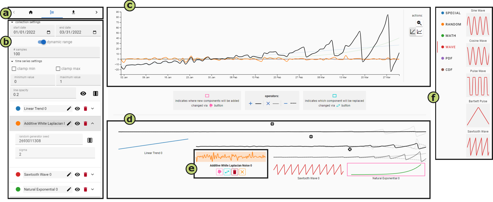

TimeSeriesMaker: Interactive Time Series Composition in No Time
(opens in new tab)
Venue. PacificVis (2024)
Materials.
DOI(opens in new tab)
PDF(opens in new tab)
Abstract. TimeSeriesMaker is an open-source application to visually compose time series data in an intuitive and shareable manner. Visualization researchers often use time series data in studies about perceptual or cognitive phenomena and many other contexts. However, finding or generating time series data that fits a given scenario is not always easy. Using a component-based architecture, TimeSeriesMaker allows analysts to compose time series data with complex patterns by combining different components, such as noise, a linear trend or a seasonal pattern. An interactive compositor tree of these components lets analysts explore their combinations using different operators. We support reproducibility and transparency by including functionalities that allow analysts to export and share their configuration, which others can use to reload and modify the same time series. In a qualitative online study with visualization researchers, we found that our approach enables them to create a time series based on an example image or their own requirements. However, system usability could be further improved when interacting with the compositor tree. TimeSeriesMaker can be found here: https://unistuttgart-visus.github.io/time-series-maker/.
Received an honorable mention award

Link to this page: